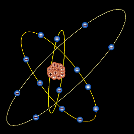
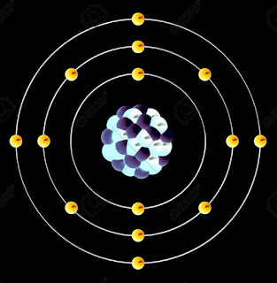
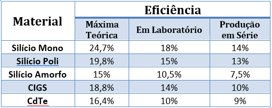

O efeito fotovoltaico é o processo físico pelo qual uma célula fotovoltaica converte
luz solar em eletricidade. A luz solar é composta de fotons, ou partículas
de energia solar. Estes fótons contém grande quantidade de energia, correspondente
aos diferentes comprimentos de onda do espectro solar. Quando os fótons colidem
com uma célula fotovoltaica, eles podem ser refletidos ou absorvidos, ou mesmo
atravessar direto a célula. Somente os fótons absorvidos geram eletricidade.
Quando isto acontece, é transferida a energia do fóton a um elétron em um
átomo da célula (que é de fato um semicondutor). Com essa nova energia, o
elétron sai de sua posição original no átomo para tornar parte da corrente,
em um circuito elétrico. Deixando sua posição inicial, o elétron deixa uma
"lacuna" para que outro elétron a ocupe. Propriedades especiais
da células fotovoltaica (um campo elétrico nela embutido) fazem com que a
correte produza uma DDP para que haja corrente em uma carga externa (como
uma lâmpada incandescente, por exemplo).
┊ O Àtomo de Silício ┊

Toda a matéria é composta de átomos. Atomos, por sua vez, são compostos de prótons
positivamente carregados, elétrons negativamente carregados e neutrons,
neutros. O número igual de elétrons e protons torna um átomo eletricamente
neutro. A energia de cada elétron depende de sua órbita. Elétrons mais afastados
do núcleo possuem mais energia que os elétrons mais próximos do núcleo.
O átomo de silício tem 14 elétrons, porém, somente os 4 últimos da camada
de valência podem ser compartilhados. Estes quatro últimos elétrons apresentam
um papel importante no efeito fotovoltaico.
Ao receber fótons de radiação eletromagnética com frequência dentro do espectro da luz visível, os
elétrons da banda de valência podem saltar para a banda de condução, produzindo uma corrente elétrica no interior da
estrutura cristalina do semicondutor. Quando um elétron deixa o seu lugar de origem, fica um buraco que é preenchido
por outro elétron, pelo efeito da recombinação. Essa recombinação de elétrons faz com que o cristal fique
eletricamente neutro. Um semicondutor puro, que não tem impurezas, é chamado de intrínseco.

┊ Semicondutor tipo-N, tipo-P e o Campo Elétrico ┊
Para induzir o campo elétrico dentro de uma célula fotovoltaica, são intercalados dois
semicondutores separados. O "tipo N" e o "tipo P".
Embora ambos os materiais sejam eletricamente neutros, o silício tipo-n
tem elétrons em excesso e o tipo-p tem lacunas em excesso. Intercalando
estes, cria-se uma junção P-N e cria-se um campo elétrico deste modo. Quando estes dois semicondutores são
intercalados, os elétrons em excesso do tipo-n
fluem para o semicondutor do tipo-p, e os elétrons que deixaram o tipo-n
criam então lacunas no mesmo. (O conceito de uma lacuna mover-se é como
o de uma bolha em um líquido. Embora seja o líquido quem esteja se movendo
de fato, é mais fácil descrever o movimento da bolha). Pelo fluxo de elétrons
e lacunas, os dois semicondutores agem como uma bateria e criam um campo
elétrico na junção P-N. É este campo que fazem os elétrons saltar para
a superfície e os faz disponíveis para o circuito elétrico. No mesmo instante,
as lacunas se movem para a direção oposta, para a superfície positiva
onde elas esperam elétrons livres.
┊ A Faixa de Condução ┊
Nem todos os fótons da luz solar que entram na célula fotovoltaica possuem um nível de energia suficiente
para deixar elétrons livres dentro da célula e gerar corrente elétrica. Este
nível de energia, conhecido como "band-gap" é a energia necessária
para quebrar ligação covalente do elétron e permitir que ele faça parte de um
circuito elétrico (corrente). Fotons com quantidade de energia maior que a da
band-gap podem gastar energia extra em forma de calor. Assim, é importante que
uma célula fotovoltaica esteja ajustada (por modificações leves na estrutura
da molécula do metal semicondutor) de modo a maximizar a energia do foton. Afinal,
uma chave para obter um célula eficiente é converter o máximo de energia luminosa
em energia elétrica.
Semicondutores usando em células fotovoltaicas tem energia band-gap que varia na ordem de 1.0 a 1.6
elétron-volt (eV). Isto devido ao fato que esta faixa de eV é a ideal para que
não haja grandes perdas de calor. Por exemplo, a energia de band-gap do silício
cristalino é de 1,1 eV.
A energia do foton de luz, também medida em eV, varia de acordo com os comprimentos de onda diferentes
da luz. O espectro inteiro de luz solar, de infra-vermelho para ultravioleta,
tem um alcance de cerca de 0.5 eV para aproximadamente 2.9 eV. Por exemplo,
a luz vermelha tem uma energia de cerca de 1.7 eV, e a luz azul tem uma energia
de cerca de 2.7 eV. Aproximadamente 55% da energia de luz solar não podem ser
usados pela maioria das células fotovoltaicas.
┊ A Eficiência da Conversão ┊
A eficiência da conversão luz/eletricidade de uma
célula fotovoltaica é a proporção de energia de luz solar que a célula converte
a energia elétrica. Isto é muito importante quando discutivos dispositivos fotovoltaicos,
porque melhorando esta eficência podemos fazer com que estes dispositivos tornem-se
mais competitivos com as demais fontes de energia.. Naturalmente, se um painel
solar eficiente pode prover tanta energia quanto dois painéis menos eficientes,
então o custo daquela energia será reduzido. É óbvio que do outro lado desta
equação está o dinheiro gasto para a fabricação.
A tabela abaixo resume as diferenças de eficiência de conversão energética entre os tipos de células
fotovoltaicas mais comercialmente ativas:

Células fotovoltaicas de diferentes processos (Silício Amorfo, CIS/CIGS, CdTe) possuem eficiências
diferentes, e trabalham espectros diferentes da radiação solar, além de terem comportamentos distintos com aumento da
temperatura, fazendo com que sejam apropriadas a determinados tipos de instalações fotovoltaicas. As constantes
melhorias nas técnicas de produção têm aumentado a eficiência de conversão das células fotovoltaicas de
silício cristalizado, em especial a do silício policristalino, que é o mais utilizado atualmente.
┊ Absorção e Condução ┊
Em uma célula fotovoltaica, os fótons são absorvidos pela parte "P" do semicondutor.
é muito importante "afinarmos" o semicondutor tipo-p com as propriedades
do fótons que irão entrar na célula afim de "livrar-mos" o máximo
de elétrons possíveis. Outro desafio é impedir que os elétrons se encontrem
com as lacunas e se recombinem antes deles "escaparem" da célula.
Para impedir isto, projetamos o material de forma que os elétrons sejam "liberados"
o mais próximo possível da junção, de forma que o campo elétrico possa ajudar
a enviá-los para a parte tipo-p e para fora do circuito elétrico. Maximizando
todas estar características, nós melhoramos a eficiência de conversão da cela
de PV.
Para fazer uma célula solar eficiente, tentamos maximizar a absorção, minimizando a reflexão
e recombinação, e assim maximizamos a condução.